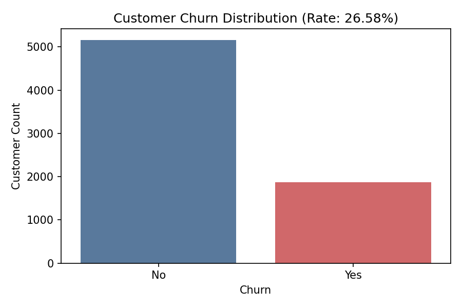
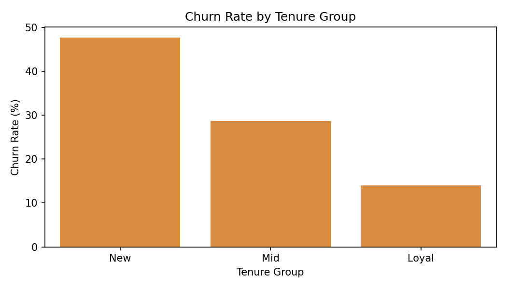
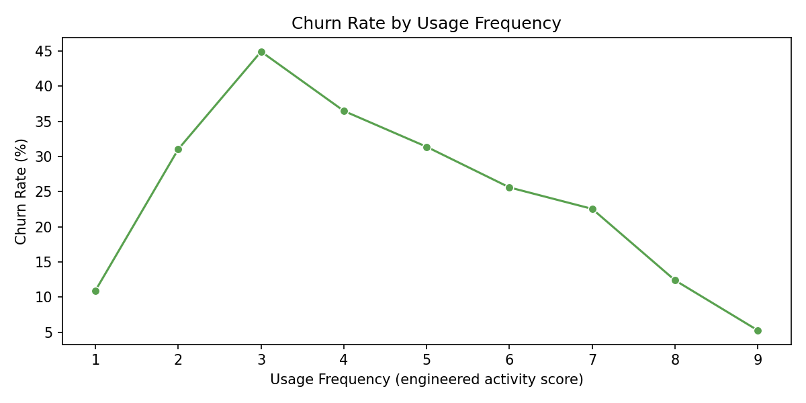
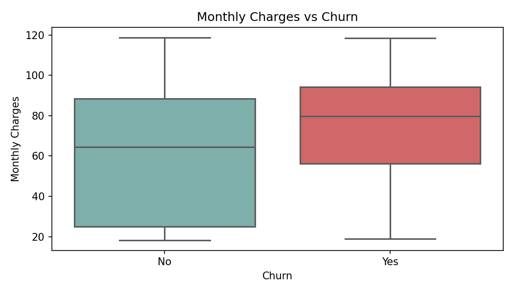
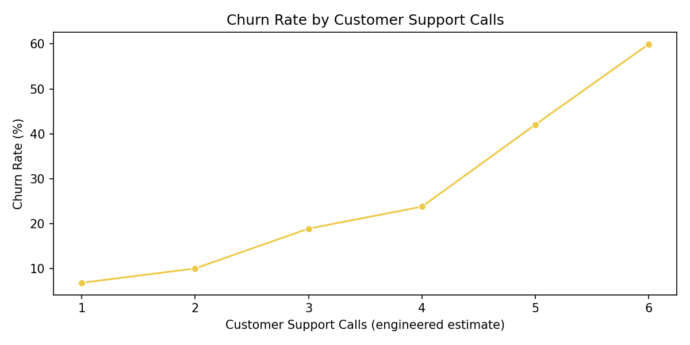
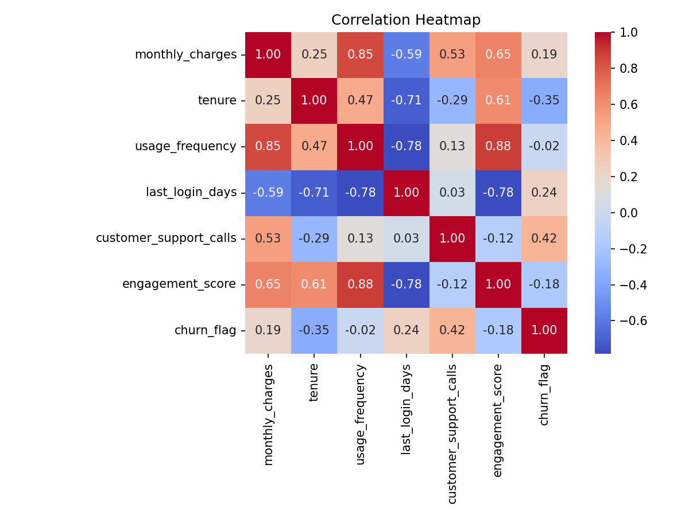
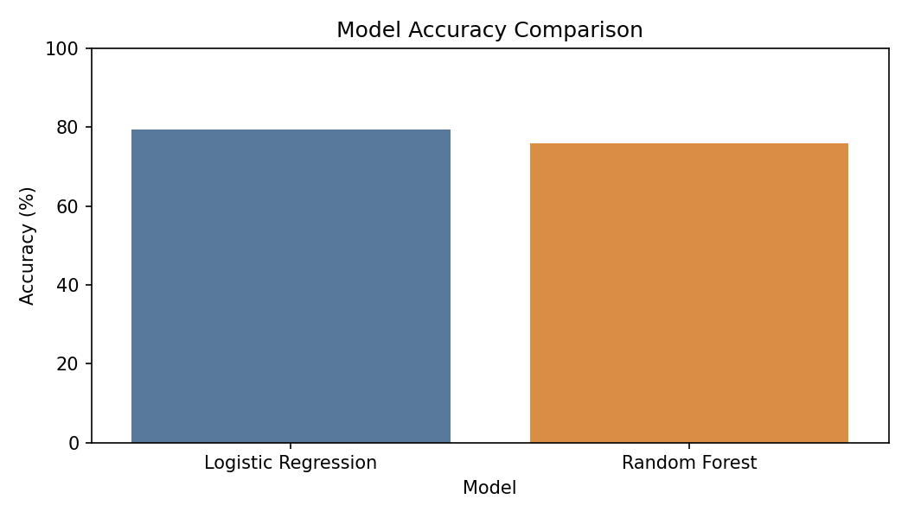
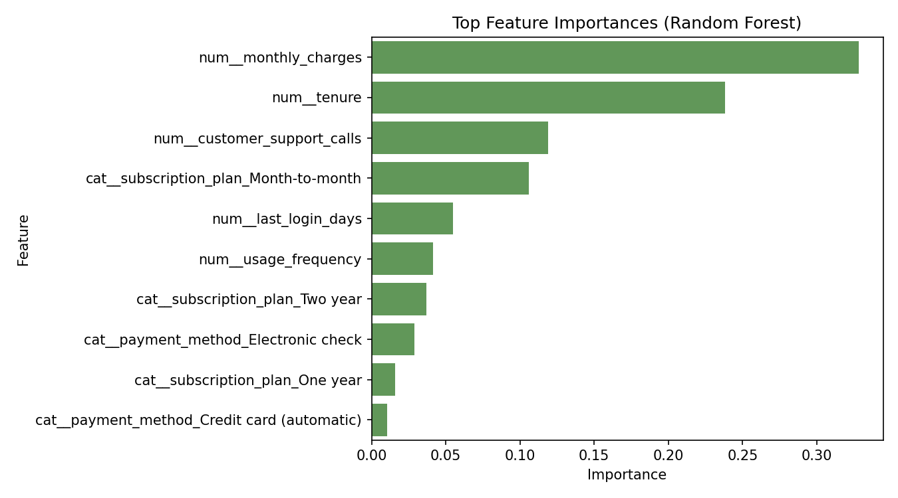

0.7946
Logistic Regression Accuracy
Visual outputs generated from the churn pipeline, along with business interpretation of model results.
Logistic Regression Accuracy
Random Forest Accuracy
Random Forest ROC-AUC
Overall Churn Rate
High-Risk Segment Share
Interpretation: Logistic Regression gives better overall accuracy, while Random Forest is used for richer non-linear signal discovery and feature importance analysis.

Shows churn and non-churn customer counts with overall churn rate.

New users churn significantly more than loyal long-tenure users.

Lower usage intensity is associated with higher churn tendency.

Higher monthly charges correlate with elevated churn risk.

Frequent support interactions indicate higher dissatisfaction and churn risk.

Highlights positive and negative relationships between features and churn.

Compares predictive performance between Logistic Regression and Random Forest.

Top drivers include monthly charges, tenure, and support-related behavior.
Most influential feature. Higher monthly billing aligns with higher churn probability.
Low-tenure customers are more vulnerable to churn, especially in early lifecycle stages.
Rising support interaction levels are a strong dissatisfaction and churn warning signal.
Churn probability <= 0.40. Maintain with regular communication and loyalty offers.
Churn probability between 0.40 and 0.70. Engage with targeted usage nudges.
Churn probability > 0.70. Prioritize proactive retention, incentives, and human support.
Execution priority: Start with High-Risk monthly-plan customers, then roll out Medium-Risk engagement workflows.